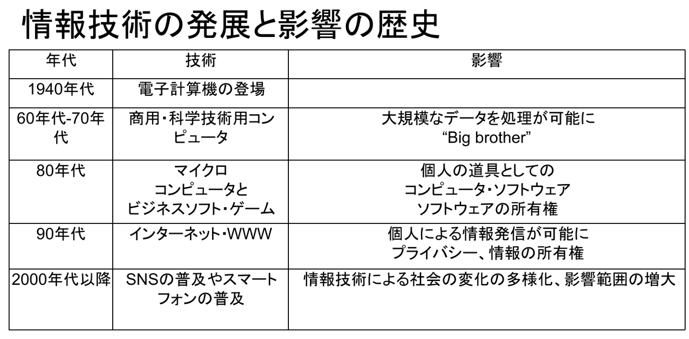
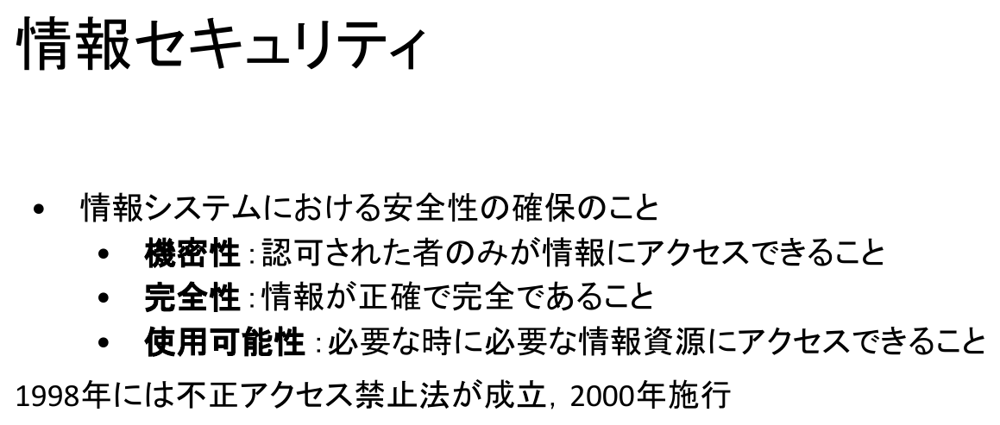

情報｜田中哲郎クラス講義ノート
このページは講義スライドの流れを節単位に組み直し、用語の関係と学習上の要点を説明する。権利・プライバシー・民主主義・AI倫理を中心に、定義だけでなく、なぜ必要か、どのように使うかまで確認する。
現代社会において、科学研究や技術開発の成果は、社会全体やその構成員一人一人の将来を左右する形で現れる。たとえばライフサイエンスの分野では、新しい治療法や生殖医療・再生医療の応用が、社会の構成員それぞれの生や死に直結する。情報技術も同様であり、技術の流通は社会の構成員一人一人のリスクや安全、セキュリティとプライバシーの問題に直結し、ときに人々の価値観や生き方そのものにまで影響を与える。本章で扱う権利・プライバシー・民主主義・AI倫理という論点は、いずれもこの「技術の成果が個人と社会のあり方を左右する」という構図の具体例である。
近年の情報技術による変化も、これが初めてではない。活版印刷が宗教改革を後押ししたことや、冷戦期にテレビ・ラジオが「鉄のカーテン」の両側で果たした役割のように、情報を伝える技術の変化は、繰り返し既存の権力構造や情報流通の仕組みを揺るがしてきた。今日のインターネットや生成AIがもたらす変化も、この系譜の延長線上にあると捉えることができる。

この年表を通して確認すべきなのは、個々の技術名や年代を暗記することではない。処理・保存・発信できる情報の規模が一段階広がるたびに、それを扱う主体（国家、企業、個人）の力関係と、そこに伴う権利・リスクの論点も一段階広がってきたという構造である。以降の節で扱う著作権、プライバシー、民主主義、AI倫理は、いずれもこの年表のどこかの段階で新しく浮上した論点の、現在における姿にあたる。
1990年代以降の変化の中心にあるインターネット・WWWの普及を、単に「便利になった」で済ませず、技術的に何が変わったのかを確認する。それまで通信にはコストがかかり、放送は限られた人にしか許されていなかった。インターネット・WWWの普及によって通信コストが大幅に下がり、誰もが情報発信できるようになったが、この変化は偶然ではなく、規模の拡大に耐えられるよう設計された技術の組合せによって支えられている。
これらの設計により、インターネットはホストコンピュータが端末を集中管理する閉じた世界から、ネットワーク中心の開かれた世界へと転換した。個々の端末は、それまでの閉じた世界の「境界」の外へ出ていくことができるようになり、ホスト対端末という中央集権的なやり方は相対的に弱まった。
技術変化がもたらした結果は、場所の制約・時間の制約・経路の制約からの解放と、輸送コストのほぼゼロ化としてまとめられる。たとえばメールによるコミュニケーションは、地理的要素に依存せずにやりとりできる点で、それまでのコミュニケーション形態を一変させた。
この4つの解放は、二つの方向へ結果をもたらした。一つは、輸送コストがほぼゼロになったことによるアウトソーシングや革新的なネットビジネスの誕生である。もう一つは、個人による情報アクセスと発信が可能になったことで、「情報は権力である」という従来の図式が弱まり、権力が情報の流れを制御することが難しくなった一方で、権威づけのない情報も増加したことである。次節では、この「権威づけのない情報の増加」が社会や文化にどのような変化をもたらしたかを見る。
インターネット技術を含む情報技術の影響は幅広く、それまでの社会の体制や権力を支えていた構造をひっくり返す力を持つ。まず流通の面では、ウェブ上での部品取引によって系列会社の壁が崩れる例が挙げられる。瞬時に最安値の部品を仕入れることが可能になり、これまで系列企業を優遇してきた障壁が少なくなる可能性がある。
次に情報流通・検閲機構の面では、出版社などによるチェック機能を経ずに、誰もが電子出版や個人のホームページを通じて情報を公開できるようになった。
検閲機能が働かないことは、自由の拡大であると同時にリスクでもある。たとえば原爆の作り方のような情報が個人で入手できてしまうこと、個人の意見があたかも「事実」であるかのようにweb上に掲載されること、誰でもアクセスできるアダルト画像やディープフェイク画像が存在することなどが挙げられる。従来の検閲機能が機能不全に陥ることは、倫理観、社会規範、宗教などへの脅威にもなりうる。
もう一つの新しい動向が、Amazon、Apple、Adobe、楽天、LINEヤフーなどのいわゆるデジタルプラットフォーム企業の台頭である。シェアを拡大するほど自社のネットワークが広がり、より多くのデータを収集できるようになるため、ビッグテックと呼ばれるIT業界の巨大企業は、既に他者には模倣困難な規模でデータの収集と分析を行っている。この「データ寡占状態」をどう規制するかについて、議論とルールづくりが各国で進んでいる。
ここまでで見た「検閲の低下」「プラットフォームへのデータの集中」という現象は、次に見る情報技術そのものの性質——形のないものを完全に複製でき、発信者を特定しにくい——から生じている。次節ではこの性質を整理する。
ここまで見てきた著作権・プラットフォーム・プライバシー・民主主義といった論点は、それぞれ独立した話題ではない。ジョンソン（2002）の整理によれば、コンピュータと情報技術には二つの際立った特徴があり、これらが以降の各節で扱う軋轢の共通の源になっている。
(1)の無形性は、次のように具体的に現れる。情報技術は、市場に流通するものの「媒体」を変えつつある。これまでCD、ビデオテープ、現像された写真、本、コピーといった物質的な媒体で扱われてきたものが、電子的に取り扱われるようになった（電子媒体化）。これにともない、保有あるいは所有という概念自体が変容する。目の前にモノ（物質的媒体）があるときは所有者がはっきりしており、コピーをとる行為には一定の抵抗感があった。ところが電子媒体になると、この抵抗が小さくなる。
複写する行為や著作権の侵害に対する利用者の意識が希薄になりやすいことは、電子媒体化の帰結として理解できる。このことが最も端的に現れるのが、次節で扱う著作権をめぐる議論である。(2)の匿名性・グローバル性は、この章後半のプライバシー・セキュリティの節と、民主主義の節につながる。
著作権とは、本・映画・音楽などを作った人を複製から守る権利である。創作にかかる労力に比べて複製は非常に簡単であるため、複製技術が登場して以来の概念といえる。著作権の目的は文化の発展にあり、作者が安心して創作できるようにすることと、誰もが安心して二次利用できるようにすること（パロディも文化の一部である）の両方を満たす必要がある。著作物は「物質」に依らないものであるため問題点も多く、過ぎたる保護はかえって文化の発展を阻害するというジレンマを抱えている。
著作権法が保護する著作物は、小説・脚本・論文・講演その他の言語の著作物、音楽の著作物、舞踏または無言劇の著作物、絵画・版画・彫刻その他の美術の著作物、建築の著作物、地図または学術的な性質を有する図面・図表・模型その他の図形の著作物、映画の著作物、写真の著作物、そしてプログラムの著作物の9種類に及ぶ。1985年の著作権法改正によって、コンピュータ・プログラムも著作物として保護されることになった。ただし解法（アルゴリズム）そのものは著作権では保護されない点に注意が必要である（特許によって保護されうるものはある）。プログラムという表現物と、その背後にある解法・手順は区別して考える。
デジタルコンテンツの著作権は、アナログコンテンツとは異なる難しさを抱える。完全な複製が作れること、簡単に複製が作れること、ネットワークと組み合わさることで低コストかつ広範囲に配布できること、そして（音楽や映像のように）複製しないと利用できない場合があることから、使用許諾の概念そのものが曖昧になりやすい。メモリ上の電子情報は、市場や流通機構を介さずに直接個人の手に渡ることが可能である。
DRM（Digital Rights Management、デジタル著作権管理）は、デジタルコンテンツの不正コピーや違法配布を防ぎ著作権を保護するための技術であり、購入した人だけ、一定期間だけといった許可の範囲内で利用できるようにコントロールする。一方クリエイティブ・コモンズ（Creative Commons: CC）は、著作物の適正な再利用の促進を目的とし、著作者みずからが著作物の再利用を許可する意思表示を手軽に行えるようにするための、さまざまなレベルのライセンスを策定・普及する国際的プロジェクトである。CCライセンスver 4.0では「表示（BY）」「非営利（NC）」「継承（SA）」「改変禁止（ND）」の4条件の組合せで、作者が自由な利用の範囲を示す。DRMが技術によって利用を制限するのに対し、CCは意思表示によって利用を積極的に許可する、対照的なアプローチであるといえる。
生成AIをめぐっては、学習データの著作権と、生成されたものの著作権という二重の論点がある。日本では文化庁が検討を進めており、文化審議会著作権分科会法制度小委員会が「AIと著作権に関する考え方について」（2024年3月）を、文化庁著作権課が「AIと著作権に関するチェックリスト＆ガイダンス」（2024年7月）を公表している。著作権の扱いは国によって異なり、米国には従来「フェアユース」（目的やデータの性質が要件を満たせば権利侵害とならないという考え方）がある。ただし、合法と違法の境界は新たな技術や社会状況の変化によって判断が更新され続けるものであり、固定的な結論として覚えるべきものではない。
プライバシーの問題は、コンピュータ技術による情報収集の規模が増大したことを背景にしている。日本ではこれを受けて個人情報保護法（2003年5月成立、2005年4月施行）が定められた。目的は個人情報の有用性に配慮しながら、個人の権利利益を保護することである。同法はこれまで2015年・2020年・2021年の3度にわたり大きく見直されており、「匿名加工情報」に関する制度の創設、「個人関連情報」を第三者提供する際の本人同意、各種機関のルールの集約・一般化など、様々な面で新たなルールづくりや改訂が行われてきた。
一方でセキュリティは、情報システムに大きく依存する社会という前提のもとで、認証・署名・暗号・電子投票などの技術によって支えられている。ここには表現の自由・通信の秘密とネットワークをめぐる緊張関係もある。組織的な通信の傍受・制限・監視は「セキュリティ vs 自由」という対立軸として現れる。
情報セキュリティとは、情報システムにおける安全性の確保のことであり、次の三要素（CIA）で整理される。

日本では1998年に不正アクセス禁止法が成立し、2000年に施行された。セキュリティ確保の技術的な取組みとしては、アクセスしてきた人間が利用権者であるかどうかを識別する個人認証技術、元のデータを解読できないデータに変換する暗号化技術が中心になる。公開鍵暗号方式では、送信者は受信者が公開している公開鍵を入手してその鍵でデータを暗号化して送信し、受信者は送られてきたデータを自分だけが持つ秘密鍵で復号して元のデータに戻す。この方式を利用したセキュリティインフラストラクチャーがPKI（Public Key Infrastructure）であり、マイナンバーカードのユーザ認証などに使われている。これに電子署名を組み合わせることで、なりすましや改ざんへの対策とする。
セキュリティ（国家安全保障）とプライバシー（個人情報保護）は対立することがある。たとえば新型コロナウイルス感染症流行時の、感染者や濃厚接触者を追跡するアプリは、監視の道具にもプライバシー保護の対象にもなりうる。個人情報の保護を優先するのか、不正者の追跡を優先するのかを決めるには開かれた討議が必要であり、それを最終的に決めるのは国民である。また、情報は国境を越えて流通するため、国ごとに異なる「セキュリティ文化」が、プライバシー、所有権、犯罪、賠償責任など多くのことがらをめぐる調整・摩擦のもとになる。
サイバースペース（バーチャルスペース）とは、ネット上の自由で規制のない議論空間を指す。情報技術が民主主義を促進する可能性はしばしば示唆されてきたが、その根拠と問題点を分けて検討する必要がある。
ただし、これらはあくまで可能性であり、自動的に実現するわけではない。民主的な手続きや制度を支援するかたちで情報技術は構築される必要がある、という留保が講義でも強調されている。
この可能性を検討するもう一つの軸が、「ネットは公共空間か共同体か」という問いである。
| 公共空間 | 共同体 | |
|---|---|---|
| アクセス | 誰もがアクセスしうる | 閉じた領域 |
| 成員の価値 | 互いに異質 | 同じ価値を共有 |
| 統合の媒体 | 人々の間に生起する共通の関心 | 内面に抱く情念（愛国心など） |
| 帰属のしかた | 一元的・排他的な帰属を求めない | アイデンティティ（自己同一性）をもつ |
インターネットは、血縁・地縁などの閉鎖空間から離れた、オープンスペースとしての公共空間を作る可能性をもつ。しかし実際にそうなっているとは限らない。Suらの国際比較研究によれば、日本は他国に比べて「ブログは社会運動の場である」と考えるブログ管理者が少なく、日本のブログ管理者は公共空間ではなく共同体を作っている可能性が示唆されている。
ネット上に誰もがアクセスできるオープンスペースを作ったとしても、それが新たな共同体間のギャップと分断を作るだけであれば、公共性からはほど遠い結果になる。インターネットの技術的な性質（多対多通信、匿名性、地理的制約からの解放）は、公共空間にも共同体の乱立にもつながりうる両義的なものであり、どちらに転ぶかは技術そのものではなく、それを使う制度や慣習に依存する。
プライバシーとデータ保護、著作権の問題は、以前からあった情報技術をめぐる議論である。これに加えて、生成AIを含む人工知能の発展により新たな論点が生まれている。個人情報を含むデータの取り扱いは、世界的に厳しくなる傾向にある。EUのGDPR（General Data Protection Regulation）は2018年5月に施行され、日本でも個人情報保護法の改正によって匿名加工情報の保護などが図られてきた（前節参照）。
COMPAS（Correctional Offender Management Profiling for Alternative Sanctions）は、米国の企業が開発し複数の州で使用された再犯予測プログラムで、裁判を待つ被告の再犯可能性を評価する。犯罪歴、保釈履歴、年齢、雇用、教育レベル、薬物使用歴、信条などに関する137の質問への回答と過去の犯罪データを照合し、再犯可能性を10段階で算出する。ところがデータのバイアスにより、白人よりも黒人に高い危険性評価が出る可能性が高く、偽陽性判定（再犯すると予測されたが実際にはしなかった人）が黒人に偏っていたことが問題になった。これは公平性と、機械学習を用いた意思決定の妥当性をめぐる議論を引き起こした。
米国のAmazon社は2014年から人事採用システムの開発を進めていたが、「女性チェス部の部長」のように「女性」に関する単語を含む履歴書が低く評価される問題が判明し、2017年に運用取りやめが決定された。原因は、学習に用いた過去10年間の履歴書データのパターン（応募者の男性比率が高いこと）にあり、その結果として良い候補者として男性が多く出力されていた。人工知能をめぐる社会的論争では、このようなジェンダーに関する問題・論争が数多く指摘されている。
生成AIでは、これまでに述べたバイアス・公平性・ブラックボックスの問題に加えて、フェイク情報（画像・動画を含む）の存在、自動運転の搭載システムへの攻撃やウイルス感染、生体認証のすり抜けといった新しい懸念が生じている。中でもハルシネーション（幻覚）——生成AIが事実に基づかない情報をもっともらしく生成してしまう現象——は、ブラックボックス問題と深く関連している。生成過程が人間に完全には見通せないからこそ、なぜ誤った出力が生まれたのかを事後的に説明することも難しい。
第1〜9章で見てきた表現の方法、情報の伝達、計算の手順、コンピュータの仕組み、ユーザインタフェースといった技術は、それ単体では価値中立な道具に見える。しかし本章で見てきたように、これらの技術が実際に社会へ実装されたとたん、著作権のような権利の調整、プライバシーとセキュリティのせめぎ合い、民主主義を支えるか損なうかという制度設計、そしてAIの判断に対する公平性・説明責任の問題として現れる。技術の仕組みを理解することと、それが社会でどう機能し何を変えるかを理解することを、切り離さずに考えるのが、この科目を通じて身につけるべき視点である。
用語を単独で暗記するのでなく、題材のどこにその概念が現れ、どの条件を根拠に判断するかを説明できるようにする。
権利・プライバシー・民主主義・AI倫理は独立した暗記事項ではなく、情報を表現し、処理し、伝え、社会で安全に利用するための一連の考え方としてつながっている。各節の太字語を自分の言葉で説明できるか確認しよう。